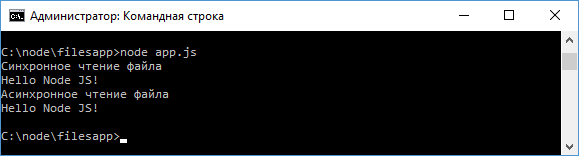
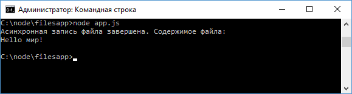

Методы работы с файлами
Для работы с файлами в Node.js предназначен модуль fs. Рассмотрим, как с ним работать.
Чтение из файла
Допустим, в одной папке с файлом приложения app.js расположен текстовый файл hello.txt с простейшим текстом, например: Hello Node JS!
Для чтения файла в синхронном варианте применяется
функция fs.readFileSync():
let fileContent = fs.readFileSync("hello.txt",
"utf8");
В метод передается путь к файлу относительно файла
приложения app.js, а в качестве второго параметра указывается кодировка для
получения текстового содержимого файла. На выходе получаем считанный текст.
Для асинхронного чтения файла применяется функция fs.readFile:
fs.readFile("hello.txt", "utf8", function(error,data){ });
Первый и второй параметр функции опять же соответственно путь к файлу и кодировка. А в качестве третьего параметра передается функция обратного вызова, которая выполняется после завершения чтения. Первый параметр этой функции хранит информацию об ошибке при наличии, а второй - собственно считанные данные. Для чтения файла определим в файле app.js следующий код:
const
fs = require("fs");
// асинхронное чтение
fs.readFile("hello.txt",
"utf8",
function(error,data){
console.log("Асинхронное чтение
файла");
if(error)
throw error; // если возникла
ошибка
console.log(data);
// выводим считанные данные
});
// синхронное чтение
console.log("Синхронное чтение файла")
let fileContent =
fs.readFileSync("hello.txt", "utf8");
console.log(fileContent);

И здесь стоит обратить внимание, что несмотря на то, что функция fs.readFile() вызывается первой, но так как она асинхронная, она не блокирует поток выполнения, поэтому ее результат выводится в самом конце.
Запись файла
Запись файла Для записи файла в синхронном варианте используется функция fs.writeFileSync(), которая в качестве параметра принимает путь к файлу и записываемые данные: fs.writeFileSync("hello.txt", "Привет ми ми ми!")
Также для записи файла можно использовать асинхронную
функцию fs.writeFile(), которая принимает те же параметры:
fs.writeFile("hello.txt", "Привет МИГ-29!")
В качестве вспомогательного параметра в функцию может передаваться функция обратного вызова, которая выполняется после завершения записи:
const
fs = require("fs");
fs.writeFile("hello.txt", "Hello мир!", function(error){
if(error) throw error; // если возникла ошибка
console.log("Асинхронная запись файла завершена. Содержимое файла:");
let data = fs.readFileSync("hello.txt", "utf8");
console.log(data); // выводим считанные данные
});

Следует отметить, что эти методы полностью перезаписывают файл. Если надо дозаписать файл, то применяются методы fs.appendFile()/fs.appendFileSync():;